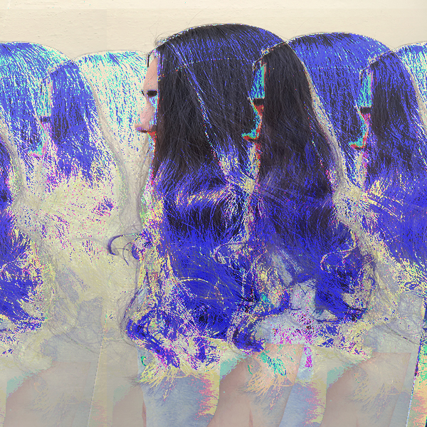

<!DOCTYPE html>
<html>
<head>
<title>glitch</title>
<meta name="viewport" content="width=device-width, initial-scale=1">
<!-- Latest compiled and minified CSS -->
<link rel="stylesheet" href="https://maxcdn.bootstrapcdn.com/bootstrap/4.3.1/css/bootstrap.min.css%22%3E

<!-- jQuery library -->
<script src="https://ajax.googleapis.com/ajax/libs/jquery/3.4.1/jquery.min.js%22%3E</script>

<!-- Popper JS -->
<script src="https://cdnjs.cloudflare.com/ajax/libs/popper.js/1.14.7/umd/popper.min.js%22%3E</script>


<!-- Latest compiled JavaScript -->
<script src="https://maxcdn.bootstrapcdn.com/bootstrap/4.3.1/js/bootstrap.min.js%22%3E</script>
</head>
<body>

<nav class="navbar navbar-expand-sm bg-light navbar-light">
 <ul class="navbar-nav">
     <li class="nav-item"><a class="nav-link" href="home.html">home</a></li>
    <li class="nav-item"><a class="nav-link" href="glitch.html">glitch</a></li>
    <li class="nav-item"><a class="nav-link" href="meme.html">meme</a></li>
    <li class="nav-item"><a class="nav-link" href="minecraft.html">minecraft</a>    </li>
    <li class="nav-item"><a class="nav-link" href="3DPrint.html">3d-print</a></li>
    <li class="nav-item"><a class="nav-link" href="index.html">net-art</a></li>
    <li class="nav-item"><a class="nav-link" href="codeart.html">code art</a></li>
</ul> 
</nav>
<head>
  <title>Bootstrap Example</title>
  <meta charset="utf-8">
  <meta name="viewport" content="width=device-width, initial-scale=1">
  <link rel="stylesheet" href="https://maxcdn.bootstrapcdn.com/bootstrap/4.4.1/css/bootstrap.min.css%22%3E
  <script src="https://ajax.googleapis.com/ajax/libs/jquery/3.4.1/jquery.min.js%22%3E</script>
  <script src="https://cdnjs.cloudflare.com/ajax/libs/popper.js/1.16.0/umd/popper.min.js%22%3E</script>
  <script src="https://maxcdn.bootstrapcdn.com/bootstrap/4.4.1/js/bootstrap.min.js%22%3E</script>

</style>
<div class="glitch">
<h1>I'm just a glitch in the system.</h1>
<p>Still Learning is a series of pieces that convey my transition period of feeling lost and unconfident with myself to<br>
feeling confident with myself. As I learning to face the camera, chop off my hair, thats when the glitches decrease.</p>
</div>
<meta name="viewport" content="width=device-width, initial-scale=1">
<style>
img {
  display: block;
  margin-left: auto;
  margin-right: auto;
}
</style>
</head>
<body>	



</body>
</html>
